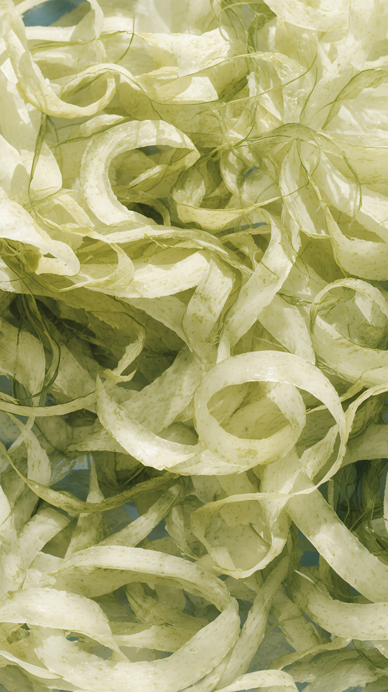
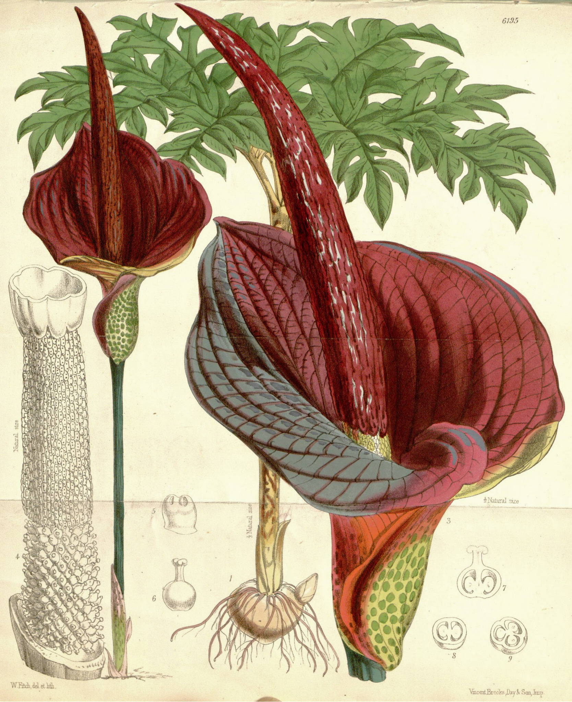

The JEL1 journal
Everyday nutrition,
explored
Thoughtful perspectives on fibre, appetite, collagen and the small routines that make nourishment easier.
 Gut health · Fibre · 3 min readGut Check: Fiber EditionYour gut microbiome is home to trillions of bacteria, and every meal is a message to them. The question isn't whether you're feeding them. It's what.Read article
Gut health · Fibre · 3 min readGut Check: Fiber EditionYour gut microbiome is home to trillions of bacteria, and every meal is a message to them. The question isn't whether you're feeding them. It's what.Read article

Skin · Collagen · 3 min readChew Your CollagenCollagen has spent the last decade in powders, capsules and coffee creamers. Now it's in a jelly. And while the format sounds like a novelty, the science of why it works is genuinely interesting — especially because most people are taking collagen without the two things their body needs to actually use it.Read article
Fibre · Foundations · 3 min readKonjac Jelly 101: Your BenefitsKonjac jelly is a snack format that's been quietly trending in Asia for years and is now showing up in fridges and desk drawers everywhere else. It isn't a diet gimmick and it isn't a candy in disguise. It's a jelly made from a plant-based fiber that behaves in a genuinely interesting way once it hits your stomach.Read article Everyday routine · Satiety · 3 min readHow to Break the Hunger LoopIt's 3:17 PM. You're not starving, exactly. But you're definitely not fine, and your brain has started scanning the room for something crunchy.Read article Everyday nutrition · Format · 3 min readJelly, But Make It Functional"Functional" has become one of those words that means everything and nothing. A protein bar is functional. So is a drink with added electrolytes, a yoghurt with probiotics, and a gummy that's mostly sugar.Read article
Everyday nutrition · Format · 3 min readJelly, But Make It Functional"Functional" has become one of those words that means everything and nothing. A protein bar is functional. So is a drink with added electrolytes, a yoghurt with probiotics, and a gummy that's mostly sugar.Read article